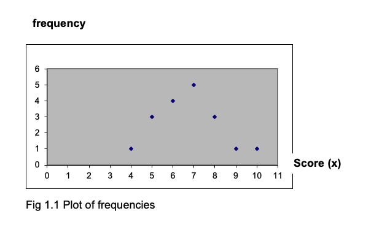
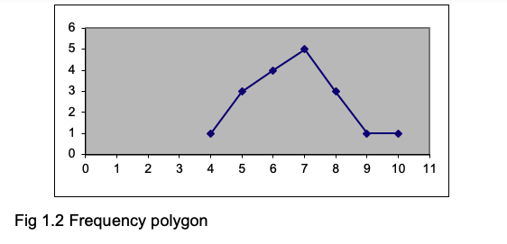
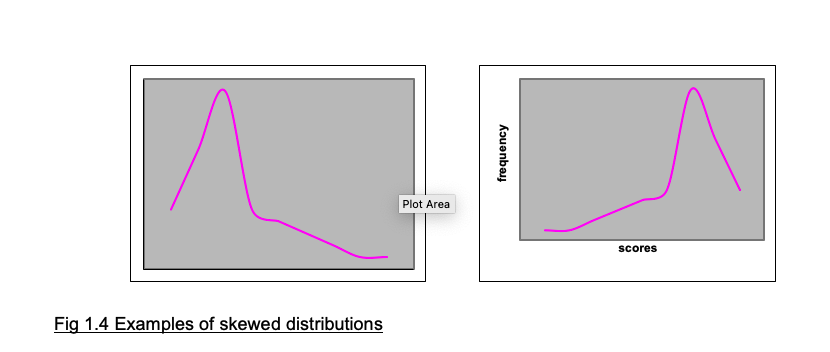
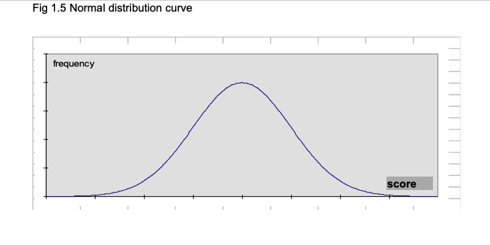

Chapter 9 Statistics Primer
To understand and appreciate how psychological tests should be used, it is necessary to understand a certain amount of statistics.
The following sections are intended to help you with some of the basic principles of topics like frequency distributions, central tendency, standard scores, and corrections.
Those of you who have taken statistics courses before may well find these sheets rather easy, but we hope you will appreciate that they have to be designed for those who have not met statistics in this context before and who may find the whole idea rather daunting.
The major topics covered are: 1. Frequency distributions 2. Measures of central tendency 3. Measures of dispersion 4. Z scores and percentiles 5. Standard error and Confidence limits 6. Correlation coefficients and scattergrams
9.1 Frequency distributions
9.1.1 Drawing frequency distributions
A frequency distribution shows the number of times each score occurs in the set of scores under examination.
Here is a set of scores: |—————————————————–| |5 7 5 8 8 5 6 7 6 7 7 4 6 10 6 8 7 9| |—————————————————–|
To draw the frequency distribution for these scores, you begin by counting the number of times each score occurred. You can see that the score of 5 occurred 3 times, the score of 6 occurred 4 times. To put it in slightly more technical language, the score of 5 has a frequency of 3, the score of 6 has a frequency of 4.
It is helpful to draw up a table showing each score and the frequency with which each score occurred, like this:
## Warning in attr(x, "align"): 'xfun::attr()' is deprecated.
## Use 'xfun::attr2()' instead.
## See help("Deprecated")| Score | Frequency |
|---|---|
| 4 | 1 |
| 5 | 3 |
| 6 | 4 |
| 7 | 5 |
| 8 | 3 |
| 9 | 1 |
| 10 | 1 |
By adding up the entries in the frequency column, you get the total frequency which must equal the number of scores you have. In this example there are 18 scores, and the total of the frequencies does equal 18.
You will see that there are different values in the column headed Score. To show that the number (score) we are referring to can take on different values, we usually label it x. Frequency is usually given the label f. So the usual way a table such as this is shown is like this:
| x | f |
|---|---|
| 4 | 1 |
| 5 | 3 |
| 6 | 4 |
and so on….
When you add up a set of numbers, you obtain the total. In statistics, the total or sum is represented by the Greek letter \(\Sigma\) which is named sigma. So the sum of the f column is represented as \(\Sigma f\). If you add up a set of scores, these are referred to as x, so the total is \(\Sigma x\).
You will find that you often need to have a graph showing the frequency distribution. There are various ways to do this, and one of them is to plot points on a graph where each point represents the frequency of a score, and then join up the points. (It is usual to have frequency on the vertical axis.) The points from the table above have been plotted in the graph below- check that you understand how the location of each point is decided.

If you connect the points with lines, you obtain a frequency polygon, as shown below (Fig1.2).

9.1.2 Grouped frequency distribution
If you have a lot of data, and a wide range of scores, plotting the frequency of every score can be unwieldy. Suppose you have recorded the ages of a set of respondents, you might find they vary between 15 and 72. To make a frequency plot more manageable, you can plot the frequency for classes or groups of ages rather than for each age. So you might record the number of cases in each age group, using groups like these: 15-24, 25-34, 35-44, 45-54, 55-64, 65-74. This means you only have 6 classes rather than the 58 you would have if you tabulated every single age.
When creating a grouped frequency distribution, you have to examine the scores to see what class intervals to use. In the example of ages, it would be useless to have just one class of 15-74, since everyone would be in it and you would have lost all the precision gained by asking people their ages. Having just 6 categories is rather few, and you might find it better to have classes of 15-19, 20-24, 25-29, 30-34 and so on. In general, somewhere about 9 or 11 classes is most useful. Note that the limits of each class are unique- you could not have classes of 15-20, 20-25, 25-30 etc because you would not know into which class to put a score of 20.
9.1.3 Skewed distributions
The distributions shown in Fig 1.1 and 1.2 are more or less symmetrical. But sometimes you will find distributions like those shown in Fig 1.4, where most of the scores are at one or other end of the scale of scores. When the distribution is like the left-hand panel of Fig 1.4a with most of the scores piling up at the left-hand side, it is described as positively skewed, and when the scores are piling up at the right-hand side as in the right-hand panel it is negatively skewed. (We all find this terminology confusing and easily forget which is which!)

9.1.4 The normal distribution curve
The normal distribution curve, which is fundamental to statistical analysis, is illustrated in Fig 1.5. It is a frequency distribution, with the frequency of a score on the vertical axis, and the scores along the horizontal axis. If we take large sets of data for biological functions such as body height, we find that the resulting frequency distribution is close to a normal curve.

9.2 Measures of central tendency
9.2.1 Mode, Median, Mean
We often need to have one figure which represents a set of scores. This is known as a measure of central tendency, and there are three such measures in common use. The MODE is the most frequently occurring value. For the set of scores in Exercise 1.2, the score which occurs most often is 10 (it has a frequency of 8) so this is the mode. For the scores shown in Exercise 1.1, the score which occurs most often is also 10 (with a frequency of 5).
The MEDIAN is the value that divides the distribution of scores in half so that half the scores fall below the median and half fall above it. To find the median, put the scores in ascending order. If there are an odd number of scores, the median is the middle score. If there are an even number of scores, average the two middle scores. For the set of scores in Exercise 1.1, if we put them in ascending order they look like this:
|——————————————————–| |6 7 8 8 8 9 9 9 9 10 10 10 10 10 11 11 12 | |——————————————————–|
There are 17 scores, so the median will be the one that has 8 scores below it and 8 scores above it. Here the median is 9. The MEAN is what is in normal speech referred to as the average (but when talking statistics, always refer to is as the mean). To find the mean, add up all the scores and then divide by the number of scores there are. For the numbers shown above, the sum is 6+7+8…+12 = 157. There are 17 scores, so the mean is 157/17 = 9.24 (to two significant places,which is usually the level of accuracy we work with).
As noted above, the sum of a set of scores is written as x. The number of scores in a set is referred to as n, so the formula for the mean is x/n. The mean is usually shown as , so the full formula for the mean is: = \(\Sigma x/n\)
(This is the arithmetic mean. There are other types such as the geometric mean and the harmonic mean, but you are not likely to need them. If you just refer to the mean, the reader will assume you are referring to the arithmetic mean.)
9.2.2 When to use the mode, median or mean
The mode is not commonly used in psychological statistics except for reporting the results of surveys or the standardisation of psychological tests when it can be useful to know which response or score was given most frequently.
The mean is the most commonly used measure of the central value. But if you have a few scores that are very different from the others (known as outliers), then the mean can be misleading because it is strongly affected by a few aberrant scores. If the distribution of scores is clearly skewed, use the median.
In some cases scores are ranks such as 1st, 2nd, 3rd and so on. When you have rank scores, the median is the appropriate measure of central value.
9.3 Measures of dispersion or variability
9.3.1 The concept of variability
Central tendency is only one feature of a set of numbers. Another most important feature is the spread or variation of the scores in the set. The table below shows some data from three groups of people who took a test when subjected to noise, a background of music or in silence.
Find and write in the means. You will see that the means for groups A and B are the same; but you can see that the scores in group A are less variable than the scores in group B. Group A scores vary between 9 and 25, whereas group B scores vary from 3 to 27. For reasons that will become clear later, we need to be able to express the variation within a set of scores as well as the central value (mode, median or mean) of the set. How can we do this?
## Warning in attr(x, "align"): 'xfun::attr()' is deprecated.
## Use 'xfun::attr2()' instead.
## See help("Deprecated")| Group.A.Noise | X | X.1 | Group.B.Music | X.2 | X.3 | Group.C.Silence | X.4 | X.5 |
|---|---|---|---|---|---|---|---|---|
| S1 | 10 | NA | S9 | 12 | NA | S17 | 22 | NA |
| S2 | 15 | NA | S10 | 9 | NA | S18 | 19 | NA |
| S3 | 9 | NA | S11 | 3 | NA | S19 | 7 | NA |
| S4 | 11 | NA | S12 | 25 | NA | S20 | 17 | NA |
| S5 | 20 | NA | S13 | 8 | NA | S21 | 24 | NA |
| S6 | 25 | NA | S14 | 16 | NA | S22 | 28 | NA |
| S7 | 18 | NA | S15 | 20 | NA | S23 | 20 | NA |
| S8 | 12 | NA | S16 | 27 | NA | S24 | 23 | NA |
| NA | NA | NA | NA | NA | NA | |||
| Sum: | NA | NA | Sum: | NA | NA | Sum: | NA | NA |
| NA | NA | NA | NA | NA | NA | |||
| Mean: | NA | NA | Mean: | NA | NA | Mean: | NA | NA |
9.3.2 Range; Interquartile range
The RANGE of a set of scores is simply the difference between the highest and lowest scores. So in group A the range is 25-9 = 16. What is the range for group B?
Range gives an indication of the spread of the scores, but of course it depends completely on just two figures from the whole set, the highest and the lowest. One very low or very high score will produce a large increase in the range, and this might be quite misleading. So we need a measure of variation that is less influenced by a single aberrant score.
One measure is the INTERQUARTILE RANGE. You will remember that the MEDIAN is that score which divides the set into two halves, with half the scores falling below the median and half the scores falling above it. The median is also the 50th PERCENTILE, which means 50% of the scores fall below it. We can also have a 25th percentile, which is the score below which 25% of the scores fall, a 75th percentile, a 90th percentile etc. (You will make use of percentiles later on.) The interquartile range is the difference between the 25th and 75th percentiles. You may come across the semi-interquartile range, which is the interquartile range divided by 2.
The interquartile range, like the range, only uses two figures from the set to express the variability in the set, and so it ignores most of the numbers. A better measure of variation would be one that used all the numbers in the set, not just two of them.
9.3.3 Variance and standard deviation
The problem of finding a number to express how much variation there is in a set of scores is tackled by looking at the mean of the set, and taking the difference between each score and the mean. In the table below, I have listed the differences between the mean and each score for group A; you should fill in the differences between the mean and each score for group B.
You will find that the total of the (x- ) column is zero: so this figure is not going to be very helpful as an indication of the variation in the set of scores! The way round this is to square each of the numbers in the (x- ) column, which gets rid of all the negative numbers, and then add them up. Again, I have done this for group A, and you should fill in the table below for group B.
The difference between each score and the mean of the set of scores (x- ) is the deviation for that score. In order to get an idea of the variation in the set, it is sensible to take the average of the squared deviations. As you know, the average is the sum/n.
(Note: Later we shall divide the sum of the squared deviations by n-1 rather than n. This is confusing! Essentially, you need to distinguish between two situations. In the present examples, we want to know what is the mean square deviation of the data we have. But if we are using the data as an estimate of a wider population, then we divide by n-1 to obtain a better estimate of the variance of the wider population. You will find we return to this…)
The sum of the deviations squared divided by n is known as the VARIANCE of the set of scores. The variance for group A is 220.00/8 = 27.50. What is the variance for group B? …
So to calculate the variance, we took the deviations of each score from the mean, squared them, added them up and divided by n. To get back to our original scale of numbers, it would seem fair that after squaring the deviations we should now ‘unsquare’ them by taking the square root. So we can take the square root of the variance: this is the STANDARD DEVIATION, and is the number usually used to express the variation in a set of scores. There are various formulae for the standard deviation; they all give the same result, but some of them are easier to calculate than others. Here are three:
\(s = \Sigma ( [S(x - )2] / [n-1])\)
\(s = \Sigma ( [Sx2 - (Sx)2/n] / [n-1])\)
\(s = \Sigma ( [nSx2 - (Sx)2] / [n(n-1)])\)
You will see that in (b) and (c) you do not have to calculate the deviations at all, but use the values of \(\Sigma(x)^2\) and \((\Sigma x)^2\) which is the sum of x squared.
It is vital that you understand the difference between these two formula, and can work them out correctly: \(\Sigma(x^2)\) means that you take each score (x) and square it and then add up all the squared x-values. \((\Sigma x)2\) means that you add up all the scores to obtain Sx and then square that sum.
Here is a simple example:
For the scores: |———-| |3 4 5 6| |———-|
\(\Sigma x^2 = 3^2 + 4^2 + 5^2 + 6^2 = 9 + 16 + 25 + 36 = 86\).
\((\Sigma x)^2 = (3 + 4 + 5 +6)^2 = 18^2 = 324\).
As you can see the results are very different, so ensure you calculate each formula correctly.
To show you how to calculate a standard deviation using formula (b)
$s = ( [(x^2) - (x)^2/n] / [n-1]) $
here are the details for finding the standard deviation for the scores in group B.
## Warning in attr(x, "align"): 'xfun::attr()' is deprecated.
## Use 'xfun::attr2()' instead.
## See help("Deprecated")| Group.B.Music | X | x | X.1 | x2 |
|---|---|---|---|---|
| S9 | 12 | 144 | ||
| S10 | 9 | 81 | ||
| S11 | 3 | 9 | ||
| S12 | 25 | 625 | ||
| S13 | 8 | 64 | ||
| S14 | 16 | 256 | ||
| S15 | 20 | 400 | ||
| S16 | 27 | 729 | ||
| x = | 120 | x2 = | 2308 |
n = 8
(x) = 120
So
$(x)^2 = 1202 = 14400 $
And
\((\Sigma x)^2 /n = 1202/8 = 14400/8 = 1800.00\)
$ s = ÷ ( [x^2 - (x)^2/n] / [n-1]) $
$ = ÷ ( [2308 – 1800] / [7]) $ $ = ÷ ( [508] / [7]) $ $ = ÷ ( [72.57]) $ $ = 8.52 $
Note that a standard deviation cannot be negative. If you calculate it and obtain a negative number, you have made an error. (You may have confused Sx2 and (Sx)2.)